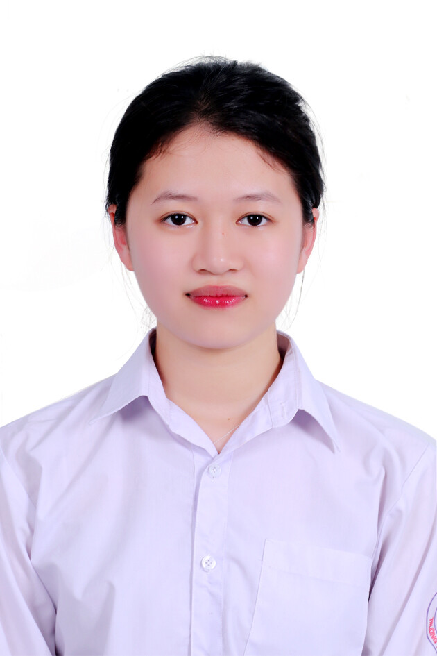

Portfolio — Nhập môn Công nghệ số & AI
Trần Thị Hà Nhi
Xin chào, em tên là Trần Thị Hà Nhi, 19 tuổi, hiện là sinh viên ngành Ngôn ngữ và Văn học Trung Quốc, Trường Đại học Ngoại ngữ (ULIS) — Đại học Quốc gia Hà Nội. Em là người Hà Tĩnh, một mảnh đất yên bình và dễ mến.
Ngoài việc học tiếng Trung, sở thích của em là xem phim và nghe nhạc. Được làm những điều mình yêu thích cùng những người mình thích là một niềm hạnh phúc với em.

01Mục tiêu học tập & định hướng cá nhân
Khi bước vào ngôi trường Ngoại ngữ danh giá, em đã biết bản thân mình sẽ gặp được những người rất giỏi, những thầy cô, giảng viên chuyên môn cao và nhiệt huyết. Được học tập trong một môi trường như vậy với em là một đặc ân to lớn, nên em mong muốn mình có thể tận dụng môi trường tốt mà mình đang có để tiếp thu kiến thức, lĩnh hội những kinh nghiệm và cách làm việc, học tập của thầy cô và các bạn xung quanh. Từ đó góp phần thúc đẩy bản thân tìm ra con đường tương lai và khẳng định bản sắc cá nhân tại ngôi trường danh giá này.
Em mong muốn sau khi được học tập và rèn luyện tại ULIS sẽ có cơ hội đi ra thế giới, giao lưu văn hoá, lĩnh hội tri thức từ bạn bè năm châu — từ đó mang bản sắc con người Việt Nam khẳng định vị thế và sức mạnh tới mọi người. Em cũng mong muốn trở thành một phiên dịch viên, để kết nối những người có khoảng cách ngôn ngữ lại gần nhau hơn.
02Mục tiêu của Portfolio này
Với trang Portfolio cá nhân này, em hi vọng có thể học hỏi, rèn luyện và thể hiện khả năng của bản thân sau khi đã học tín chỉ Nhập môn Công nghệ số. Bên cạnh đó, đây còn là một không gian để em lưu trữ các bài tập cá nhân của mình, giúp dễ dàng tìm kiếm, truy cập và chia sẻ.